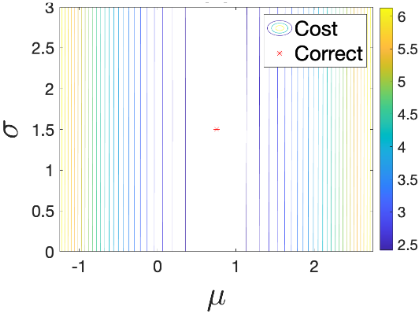
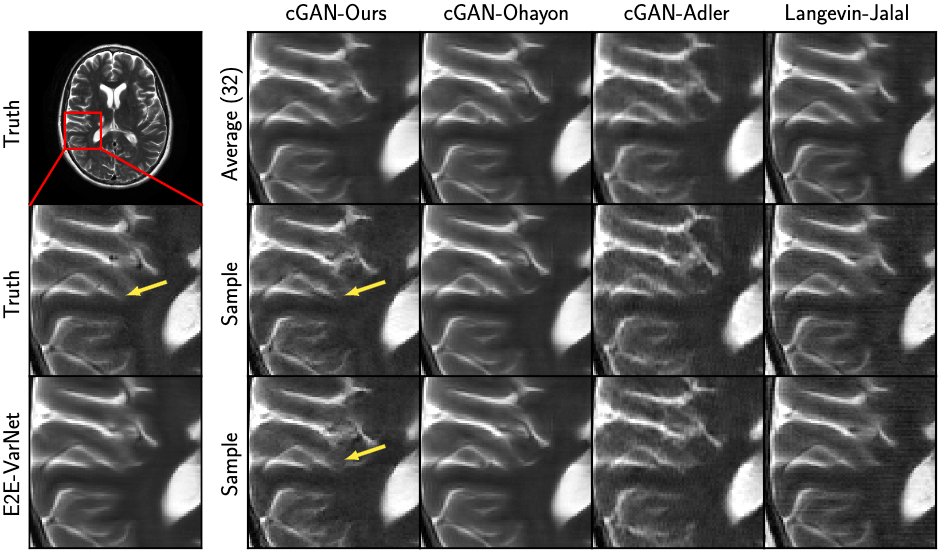

A Regularized Conditional GAN for Posterior Sampling in Image Recovery Problems
NeurIPS 2023
Matthew Bendel
Rizwan Ahmad
Philip Schniter
Abstract
In image recovery problems, one seeks to infer an image from distorted, incomplete, and/or noise-corrupted measurements. Such problems arise in magnetic resonance imaging (MRI), computed tomography, deblurring, super-resolution, inpainting, phase retrieval, image-to-image translation, and other applications. Given a training set of signal/measurement pairs, we seek to do more than just produce one good image estimate. Rather, we aim to rapidly and accurately sample from the posterior distribution. To do this, we propose a regularized conditional Wasserstein GAN that generates dozens of high-quality posterior samples per second. Our regularization comprises an L1 penalty and an adaptively weighted standard-deviation reward. Using quantitative evaluation metrics like conditional Fréchet inception distance, we demonstrate that our method produces state-of-the-art posterior samples in both multicoil MRI and large-scale inpainting applications.
Our Main Contribution
We regularize the generator of our cGAN with an L1 penalty on the generator's sample-average plus a carefully weighted standard-deviation (STD) reward.
For the case of an independent Gaussian posterior, we prove that our regularization recovers the correct posterior, that an L2 penalty fails, and that an L2 penalty plus a variance reward also fails.
Below, we show the contour plots of several regularizations for the simple case of a scalar-Gaussian posterior .
The contours are plotted versus the generator parameters, which in this case are the posterior mean and standard deviation.
The plots show that minimizing the proposed regularization recovers the correct parameters, while minimizing the other regularizations does not.
Please see our poster or our paper!
L2
L2 + Variance Reward
Ours
Adapting the Weight on the STD Reward
For the independent-Gaussian case, we derive the correct weight \(\beta\) on the STD reward in closed form. For practical datasets, we propose a method to learn \(\beta\).
In particular, we adapt \(\beta\) during training so that the SNR gain from averaging \(P\) posterior samples matches the expected theoretical behavior, the latter of which we derive in our paper.
The orange curves below show the empirical SNR versus \(P\) for various values of \(\beta\) (for the case of multicoil MR image recovery) while the blue dashed curves show the expected theoretical behavior.
The figures show that, for this application, the optimal \(\beta=0.53\).
Please see our poster or our paper!
Sample Reconstructions
We applied rcGAN to multicoil MRI reconstruction and large-scale image completion. For additional examples, please see our supplementary material.
MRI Reconstruction
Samples from our cGAN show meaningful variations (see arrows)
Image Completion
Samples from our cGAN are both high quality and diverse
Paper
A Regularized Conditional GAN for Posterior Sampling in Image Recovery Problems
Matthew Bendel, Rizwan Ahmad, Philip Schniter
Bibtex
@inproceedings{Bendel:NIPS:23,
title={A Regularized Conitional GAN for Posterior Sampling in Image Recovery Problems},
author={Bendel, Matthew and Ahmad, Rizwan, and Schniter, Philip},
booktitle={Thirty-seventh Conference on Neural Information Processing Systems},
year={2023},
url={https://openreview.net/forum?id=z4vKRmq7UO}
}
Acknowledgements
The authors are funded in part by the National Institutes of Health under grant R01-EB029957.
This webpage is based off the template that was originally made by Phillip Isola and
Richard Zhang for a colorful ECCV project;
the code for the original template can be found here.
This site uses bootstrap and font awesome.